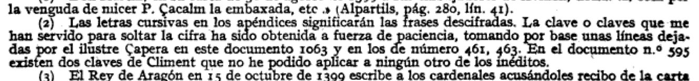
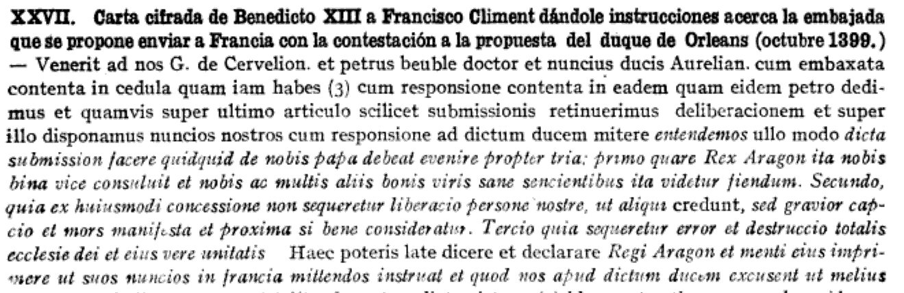
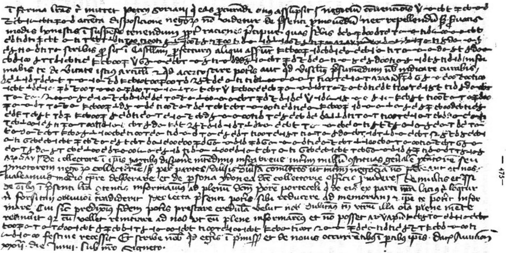
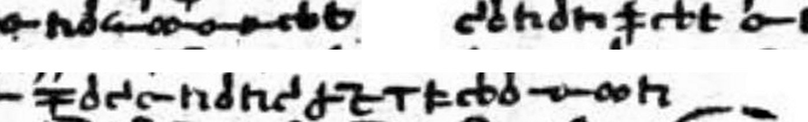

: Benedict XIII as St Peter, panel by Joan Reixach, 15th century. Wikimedia Commons, public domain.")
At a glanceDeciphered in print, 1920 · 14 letters, about 4,750 deciphered words
- The letters
- Benedict XIII (Pedro de Luna) to Francesc Climent, his chamberlain and agent in Barcelona, from the besieged palace at Avignon, September 1399 to February 1403; four more from men of his circle, 1399–1416.
- Where
- Arxiu Capitular de Barcelona, the Schism papers Climent left to the chapter (Puig’s “Documentos inéditos del obispo Çapera”, today the paper part of the series Cisma d’Occident). Not digitised. Catalogue entry 334 here.
- The cipher
- Clear Latin with ciphered words and passages. The cipher is a plain substitution, one sign per letter, 20 letter values, signs joined without word breaks, with a dotted V for the King of Aragon and groups of null signs at sentence breaks.
- How it was deciphered
- By Sebastián Puig y Puig, canon of Barcelona, in 1920. He rebuilt the key “a fuerza de paciencia” from lines Climent had deciphered on three of the letters, and printed the letters with the deciphered passages in italics. He never printed the key. It is rebuilt here from his one facsimile page (section 05).
- What it says
- Money for a pope under siege, embassies to Paris, and whom to trust. One passage gives his three reasons for refusing the “submission” France demanded: it would bring gravior capcio et mors manifesta, a harsher captivity and plain death.
- Key
- Rebuilt from the facsimile against Puig’s text. It decrypts every legible cipher run on the page: 755 of 826 letters confirmed sign by sign (91%), none against it. It corrects Puig three times, for example te sicudum to tenendum.
- Still open
- One overwritten stretch of the facsimile page. Also open: one line of 1398 in an unknown key, two keys of Climent that fit nothing, and letters Puig cited but did not print.
- Credit
- The decipherment is Puig’s (1920); the key table is new here. Meister (1906) reported the documents on information from Franz Ehrle.
01 What Meister reported
In his history of papal cryptography, Aloys Meister wrote that Benedict XIII kept to the cipher practice of his predecessor Clement VII. Examples, he said, were in the cathedral archive of Barcelona, in a box labelled Documentos referentes a la familia Luna I: a letter in Benedict’s own hand with some lines in cipher, and an instruction of about three folio pages, a large part of it in cipher. His footnote says the information came from Father Ehrle, who assured him the texts were “mixed with signs”. Meister had not seen them and printed neither.
That made it the project’s best lead for a ciphertext from before 1425 with no known decipherment, and possibly 1,500–3,000 signs of papal cipher from about 1400. The archive scan of 23 September 2026 found no decipherment of it. One check was left: Puig y Puig’s 1920 book on Pedro de Luna, which HathiTrust would not serve to this machine.
02 Puig y Puig, 1920
Sebastián Puig y Puig, canon of Barcelona, found the papers while working on his history of the bishops of Barcelona. They were Climent’s own. Francesc Climent, called Çapera, was Benedict’s chamberlain and treasurer, nuncio to Castile, later bishop of Barcelona and patriarch of Jerusalem, and he left his books and papers to the chapter when he died in 1430. Puig sorted the paper documents under the working title Documentos inéditos del obispo Çapera, and from them wrote Pedro de Luna, último papa de Aviñón (Barcelona, 1920). In the preface he says he printed the most important of them, “especially the ten or eleven written in an unknown key, which after laborious trials we had the good fortune to decipher”.
A note at the first of them explains how.

So Climent had deciphered some lines himself, on three of the letters, and Puig used those lines as a crib to recover the key and decipher the rest. Because the cipher is mixed into clear Latin, a ciphered word is usually framed by clear context, which is the situation Puig describes.
Puig’s borrowing had a cost. When the archive was catalogued in the 1970s, Josep Baucells quoted a note by the archivist Josep Mas: between 1920 and 1930 Canon Puig studied a large part of the Schism documents at home, “but many were not returned”. Some of the cipher originals may now survive only in Puig’s print.
03 The fourteen cipher letters
Puig’s appendix calls fourteen items carta cifrada. Every page of them was checked for gaps. He leaves no gap in the deciphered text, and a handful of odd forms inside the italics (“mi. i ur”, “ot.o”, “cer ificari”) look like one-letter slips of decipherment or print.
| Puig | Date | From → to | Deciphered | Subject |
|---|---|---|---|---|
| XXVI | 22 Sep 1399, Avignon | Benedict → Climent | ~195 words | The bishop of Apt coming from Paris to work against him; press the kings of Aragon, Castile and Navarre for an embassy. One of the three letters with Climent’s own decipherment. |
| XXVII | Oct 1399 | Benedict → Climent | ~490 | Why he refuses the “submission”; who should go to France; bring ambassadors to Arles by armed boat. Long stretches of Aragonese and Castilian inside the cipher. |
| XXIX | 22 Oct 1399 | Fr. P. de Santa Cruz → Climent | ~100 | The French ambassadors leave angry and the besieged household is left in periculo mortis. |
| XXXV | 22 Jun 1400, Avignon | Benedict → Climent | ~260 | Money for the count of Fondi and for his own keep; the King of Aragon’s embassy to France. The last page is in facsimile. |
| XXXVI | 2 Jul 1400, Avignon | Benedict → Climent | ~325 | Geraldo de Cervelló’s intrigues over the see of Lérida; send two Carthusians at once. Mostly in cipher. |
| XXXVII | 24 Sep 1400, Avignon | Benedict → Climent | ~19 | One sentence: send 3,000 francs. |
| (note) | 15 Sep 1400 | P. Jafet → Climent | ~14 | Only one sentence printed: some of Climent’s letters were intercepted that day and recovered. |
| XXXIX | 6 Oct 1400, Avignon | Benedict → Climent | ~33 | The 3,000 francs again. |
| XLI | 18 Dec 1400 | Benedict → Climent | ~100 | Send 3,000 or 4,000 francs; almost entirely in cipher, date and address included. |
| XLII | 29 Dec 1400, Avignon | Benedict → Climent | ~255 | Send the 5,000 you hold; sent “without the Pope’s signet, for a reason”. |
| XLIII | 11 Jan 1401, Avignon | Benedict → Climent | ~420 | The King of Aragon’s loan affair; fear of being accused of collusion. Nearly all in cipher; one of the three letters with Climent’s own decipherment. |
| LII | 8 Feb 1403, Avignon | Benedict → the bishop of Ávila and Climent | ~85 | Three forms of the bull for Castile’s return to his obedience; act boldly. The third letter with Climent’s own decipherment. |
| LXIV | 23 Aug 1408, Perpignan | Alfonso de Exea, archbishop of Seville → Climent | ~2,090 | The defection of Pedro de Frías, cardinal of Spain, to France. Entirely in cipher; the longest text. |
| CXVI | 21 Dec 1415 | Pedro Comuel → Climent | ~300 | A secret mission to the Queen of Castile. |
| CXXXV | 27 Jun 1416 | Pedro Comuel → Climent | ~85 | His coming to Aragon. |
The word counts are estimates from Puig’s printed lines. Benedict’s own letters, from the siege of the Avignon palace to his escape in March 1403, carry about 2,200 deciphered words. That is more than Meister’s “three folio pages”, which is probably letter XXVII, and one letter with “some lines” in cipher.

04 The one page of cipher in print
Puig printed no key and no sign table, but on p. 475 he inserted, sideways and without a caption, a photogravure of the last page of letter XXXV (22 June 1400). His printed text of the same passage runs in a narrow column beside it, so every cipher run on the plate comes with its plaintext.

The signs are small invented shapes, several of them joined by hair-lines, written into the line of ordinary Latin. Two runs were aligned with Puig’s text to see what kind of cipher it is and whether his italics fit:
- End of line 1: Negocium convencionis, then a dotted V̇, then signs for cum duce Burgundie. Puig prints “Regis Arag.” in roman here, so V̇ is a name sign for the King of Aragon that he expanded. In the letters that follow, u is the same sign three times, and d, e and c each repeat.
- Start of line 8, et presertim scribe qu…: e repeats four times, s twice and i twice. The value for m matches the one found for cum in line 1, and the values for b, c and u match those in Burgundie.
It is a letter-for-letter substitution in invented signs, with name signs mixed in, and Puig’s decipherment fits where it was tested. Google serves the page at 1826 × 2500 pixels, about forty pixels per manuscript line of a reduced halftone, and a first attempt on the long run broke down at quo modo se habet. A second pass over the whole page did better.
05 The key, rebuilt
No sharper image could be found. The Google scan is the largest served, the second Google copy is snippet view, and HathiTrust would not serve its copy. So the plate was cut from the page, turned upright, straightened by 0.7°, and split into its 26 lines. Each cipher run was then examined at three to five times magnification with the contrast stretched, word by word against Puig’s text. At that scale the signs separate once the plaintext fixes where each word falls. One key decrypts the whole page:
| Plain | Sign on the plate | Plain | Sign on the plate |
|---|---|---|---|
| a | open hook, like a δ with no bowl | n | n |
| b | T with a bar | p | inverted T with a stroke (⊥) |
| c, i | a small o | q | double-barred upright |
| d | double cross (‡) | r | a single upright stroke |
| e | δ | s | T |
| f | σ with a flag | t | c with a stroke above (c′) |
| g | a 4-like sign | u, v | cb, written as one joined sign |
| h | a 2-like sign | x | an α-like sign |
| o | a double loop (ꝏ) | ||
| l | a looped d | V̇ = the King of Aragon (Rex, Regis, Regi Aragonum, four times) | |
| m | ε with a foot | groups of λ- and ʒ-like signs = nulls at sentence breaks | |
It is the simplest kind of cipher: one sign for each letter, no alternatives, no word breaks. Many of the signs are ordinary letters used for other letters (n is n, but T is s and δ is e), so a run looks like scrambled handwriting. The letter o is written as a double loop, so modis is m ꝏ d o s in signs. c and i share a single small o on the 1920 halftone, and d and p are hard to tell apart. The original may separate them with a tick or a dot the reproduction lost. Four groups of λ- and ʒ-like signs stand where Puig prints a semicolon or a dash, and he gives no text for them. They are nulls marking punctuation.

How much it decrypts. The cipher runs on the page carry 148 words, 826 letters of Puig’s plaintext. 125 words were confirmed sign by sign. Sixteen have one to three signs too blurred to confirm. Seven, in line 4, fall in a stretch that the writer underlined and overwrote, which the halftone cannot resolve. That makes 755 of 826 letters confirmed (91.4%), or 96.3% of the legible runs, and not one sign contradicts the key. The word-by-word record is plate475_check.tsv, and the key is key.md.
Three corrections to Puig. In line 4 the cipher says tenendum, not Puig’s te sicudum, which is not a Latin word. The sentence is et ideo est sic negocium tenendum in suspenso: “so the business is to be kept in suspense”, repeating the clear in suspenso tenendum just before it. In line 24 the Prior of Portaceli, the Pope’s messenger, frightened off by the besiegers, left absque congedio, “without leave”, not abique congerio. And necesaria is written necessaria. Otherwise Puig’s decipherment of the page stands. The key is a known-plaintext reconstruction. The decipherment is Puig’s; the key he worked out in 1920 is now on record.
06 What remains open
- Line 4 of the facsimile, non approbando nec reprobando; de cardinali catan-, is underlined and overwritten in the original and cannot be transcribed sign by sign on the halftone. Neither can the sixteen blurred signs elsewhere (blocker: needs a photograph of doc. 1068 or a 600-dpi scan of p. 475).
- The other letters’ ciphertext. The key should decrypt all of Benedict’s letters of 1399–1403, but none of them is imaged (blocker: needs the originals, some of which Puig may not have returned).
- One cipher line of 4 December 1398. A letter of Fr. Pedro de Vico to Guillem Carbonell, canon of Barcelona (Puig app. XIX, p. 461), “followed by a ciphered line in an unknown key”, which Puig did not print. It was probably linked to secret instructions written on the back of the letter to look like a page of a missal (blocker: needs the original).
- Two keys of Climent in document 595 that Puig could apply to nothing. He did not print them (blocker: needs the original).
- Letters cited but not printed: P. Jafet to Climent, 15 September 1400 (doc. 1043), apart from one sentence, and a further letter of Comuel (doc. 661) (blocker: needs the original).
The material Meister reported, a long papal cipher of about 1400, was deciphered and printed by Puig in 1920. The project’s oldest-cipher search goes on with the other candidates, all of which also need photographs from the archives.
07 Sources
- S. Puig y Puig, Pedro de Luna, último papa de Aviñón (1387–1430), Barcelona: Editorial Políglota, 1920. Preface p. 2; appendix with the cipher letters pp. 461–579; facsimile p. 475; index from p. 621. Full view on Google Books (CuOlkxWnk-EC), University of Wisconsin copy; HathiTrust record 100676638.
- A. Meister, Die Geheimschrift im Dienste der päpstlichen Kurie, Paderborn 1906, pp. 22–23 and note 1 (Internet Archive).
- J. Baucells i Reig, El fons Cisma d’Occident de l’Arxiu Capitular de la Catedral de Barcelona: catàlegs, còdexs i pergamins, Barcelona: Institut d’Estudis Catalans, 1978, pp. 11–13 (PDF on the archive’s site).
- Archive-scan notes of 23 September 2026,
oldest/scan_2026-09-23/iberia.md, candidate 1.
Notes, the key, the word-by-word check of the facsimile and the profile are in benedict1399/.